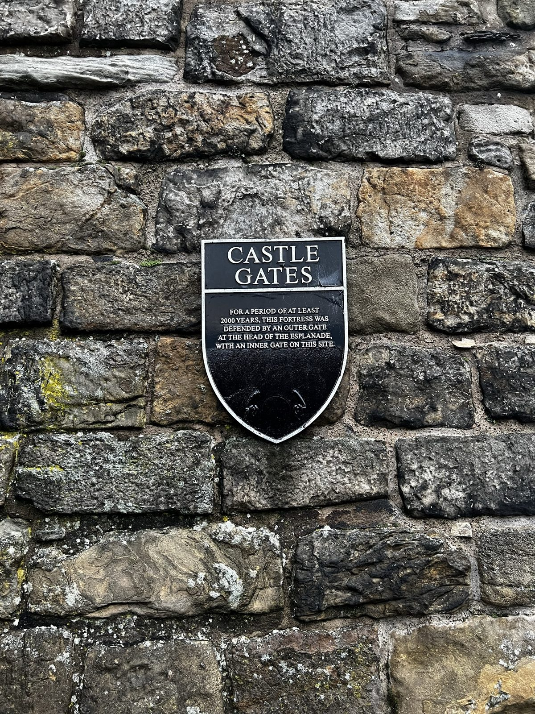
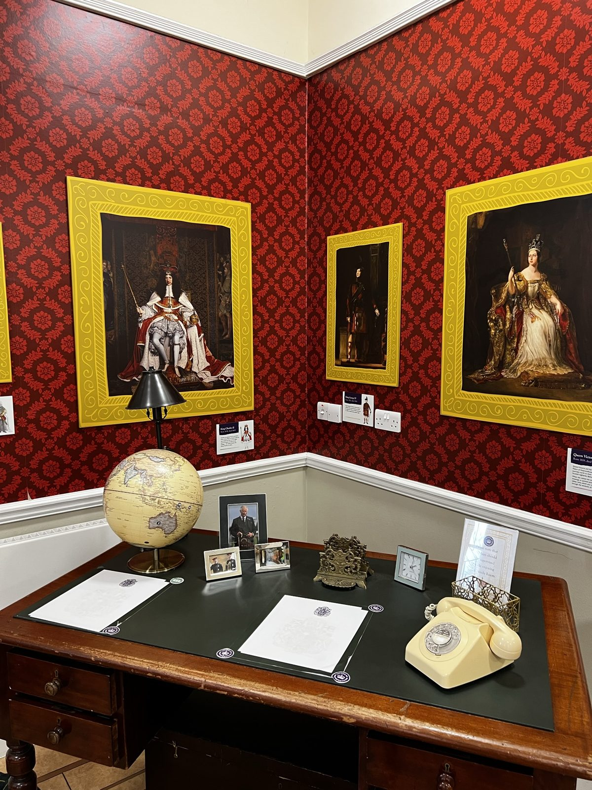

19-22 Nov / Edinburgh - Bicester - London
Edinburgh brought the trip back to stone, history, and winter lights.
After the Highlands, Edinburgh brought the route back into city texture: castle gates, palace lawns, old interiors, evening lights, and then the final return south through London.
Back to UK and Scotland trip
Edinburgh
The city looked best in stone and grey light.
Edinburgh has a strong visual identity even in simple photos: old facades, narrow vertical lines, palace lawns, and that slightly dramatic grey sky that makes everything feel older.
Coming in after the Highlands made the city feel sharper. The scenery was no longer wide and wild; it became walls, gates, courtyards, and rooms full of history.



Edinburgh worked best through details: courtyards, gates, church fronts, and a lot of grey stone.
Evening
Old rooms and winter lights softened the city at night.
The later Edinburgh photos make the end of the trip feel less severe. The buildings stay grand, but the lights and interiors bring back warmth after the colder Scotland road days.



Once the lights came on, Edinburgh felt less stern and much more festive.
Bicester and London
The ending turned brighter and busier again.
The final photos move back into England and feel like a release after Scotland's heavier mood. The trip did not end with a quiet fade-out; it ended with lights, crowds, and one last dose of London brightness.
The route closed brighter than it began: more lights, more movement, and a proper city ending.
Personal take: Edinburgh gave the ending its old-stone backbone, but the return through London made the closing chapter feel lively again.